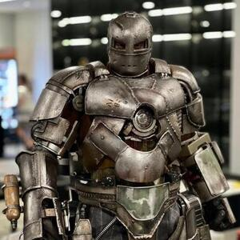
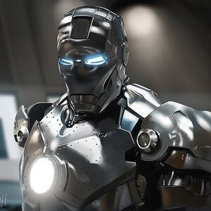
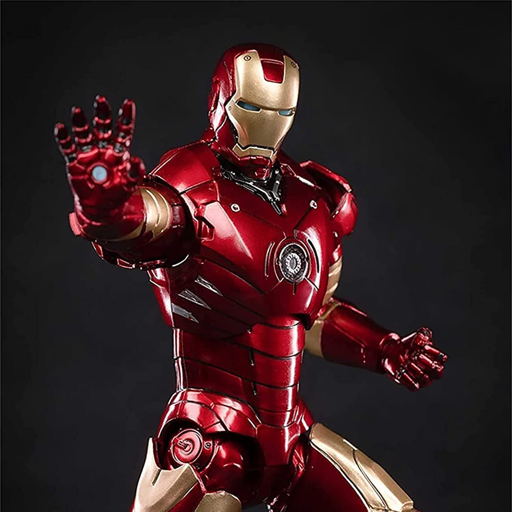
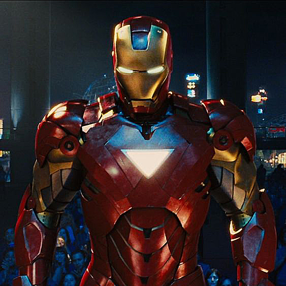
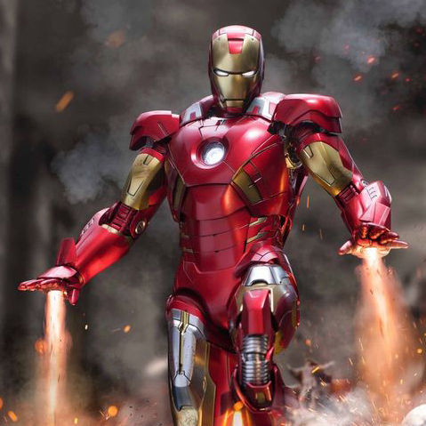
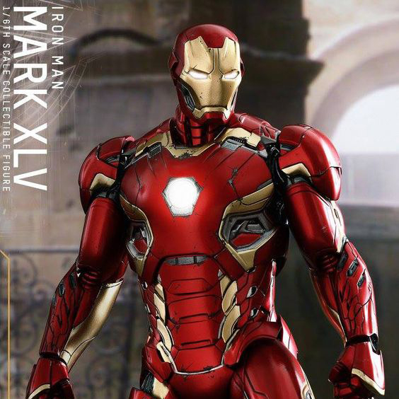
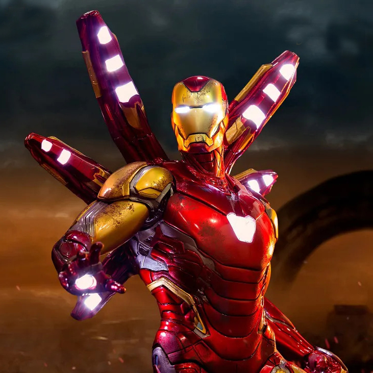

-
MARK I
Descrição
A primeira armadura construída por Tony Stark, que estava dentro de uma caverna e usou peças de mísseis para criar a única forma de sair do cativeiro. Ela era à prova de balas, contava com um lançador de foguetes, era capaz de voar e também tinha um lança-chamas, que foi bastante usado durante a fuga. Embora ela tenha funcionado bem, Tony quase morreu por não poder pousar de forma apropriada.
MARK II
Descrição
A Mark II é a segunda iteração da icônica armadura do Homem de Ferro, apresentando um design mais aerodinâmico e tecnologia avançada. Ela oferece melhorias significativas em termos de voo, armamento e defesa em comparação com a Mark I. Essa versão serve como uma etapa intermediária no desenvolvimento das armaduras do Homem de Ferro, preparando o terreno para futuras iterações ainda mais poderosas.
MARK III
Descrição
A Armadura Mark III do Homem de Ferro é uma versão altamente avançada e icônica do traje de Tony Stark. Possui um design aerodinâmico, reator arc no peito para energia, é mais resistente que as versões anteriores e pode voar a velocidades supersônicas. Contém armas integradas como mísseis e lasers, além de um sistema de inteligência artificial chamado J.A.R.V.I.S. Essa armadura marca um ponto de virada na jornada de Tony Stark como Homem de Ferro, representando sua ascensão como um dos super-heróis mais poderosos da Marvel.
MARK VI
Descrição
A Armadura Mark VI do Homem de Ferro, apresentada em "Homem de Ferro 2", é uma versão avançada do traje de Tony Stark. Com design aerodinâmico e reator arc no peito, oferece maior resistência e agilidade. Equipada com propulsores melhorados, pode voar em alta velocidade e manobrar com facilidade. Possui arsenal de armas integradas e sistema de inteligência artificial para suporte tático. Essa versão representa um avanço tecnológico na jornada do Homem de Ferro, permitindo-lhe enfrentar desafios mais formidáveis e destacar-se como um dos super-heróis mais poderosos da Marvel.
MARK VII
Descrição
A Armadura Mark VII do Iron Man, criada por Tony Stark, é uma das versões mais icônicas de seu traje. Introduzida no filme "Os Vingadores" (2012), a Mark VII apresenta avanços tecnológicos significativos em relação às versões anteriores. A Armadura Mark VII é um símbolo da evolução tecnológica contínua de Tony Stark, combinando mobilidade, poder de fogo e resistência para enfrentar ameaças de alta escala.
MARK XLIV
.jpg)
Descrição
A Armadura Mark XLIV (Hulkbuster) do Iron Man, introduzida no filme "Vingadores: Era de Ultron" (2015), é uma das armaduras mais poderosas e especializadas de Tony Stark. Desenvolvida especificamente para enfrentar o Hulk, a Mark XLIV é uma peça especializada e poderosa no arsenal de Tony Stark, projetada para enfrentar ameaças de escala massiva com força e durabilidade excepcionais.
MARK XLV
Descrição
A Armadura Mark XLV do Iron Man, introduzida no filme "Vingadores: Era de Ultron" (2015), é uma evolução significativa no arsenal de Tony Stark. Em resumo, a Mark XLV é uma armadura que exemplifica o compromisso de Tony Stark com a inovação e a proteção global, sendo um marco significativo na sua linha de trajes de combate.
MARK LXXXV
Descrição
A Armadura Mark LXXXV do Iron Man, introduzida no filme "Vingadores: Ultimato" (2019), é a última e mais avançada armadura criada por Tony Stark, destacando-se por sua tecnologia de ponta, capacidade de combate excepcional e papel crucial na batalha final contra Thanos, tornando-se um dos trajes mais memoráveis e importantes de toda a saga dos Vingadores.